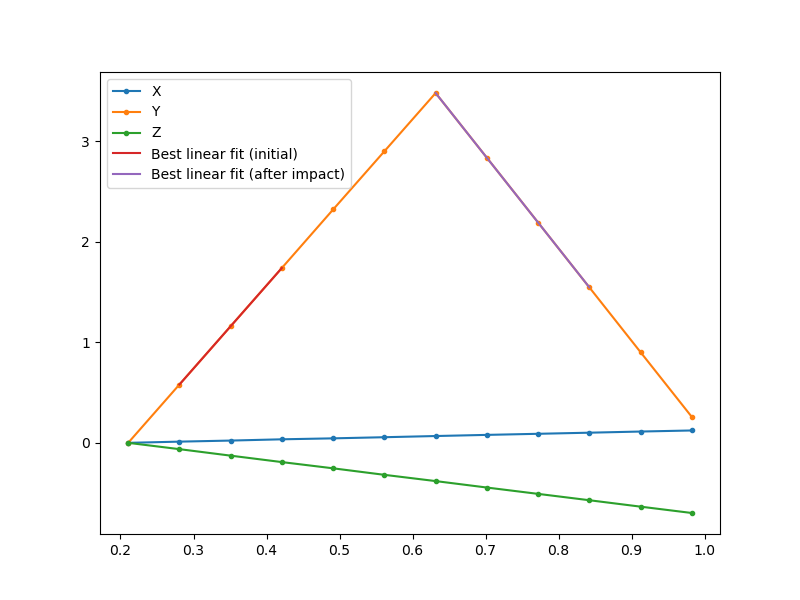
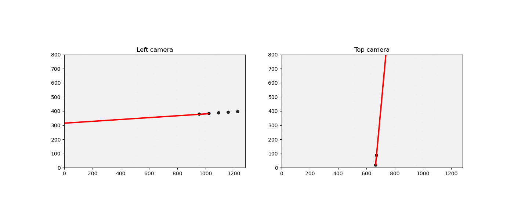
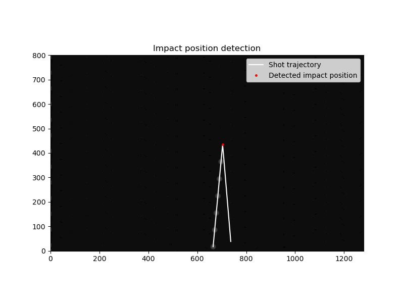

Velocity¶
The velocity before and after the impact can be computed using the data_treat.data_pp.get_velocity() function.
-
data_treat.data_pp.get_velocity(ti, Xi, Yi, Zi, thres=1.3, plot=True, saveDir='data_treat/', init=0, pt_num=2)[source]¶ Computes the shot velocity before and after the impact by linear fit. Before the impact, the functions continues adding the next acquisition point to the linear fit until the new points reduces the fit success score at less then the previous score * threshold. Then the first point with constant velocity after the impact is searched so that lienar fit with the same number of points as before the impact yields a better score than before the impact. It is based on the assumption that there will always be more acquisition point after the impact than before.
- Parameters
t – time vector
Xi,Yi,Zi – 3D coordinates (ndarray)
thres – threshold for the accepted residual difference (default 1.3)
plot – True or False indicate if should plot a verification picture
saveDir – Directory to save the picture to
init – initial index to compute the initial velocity
pt_num – minimum number of points to use to compute the velocity
- Returns
VX,VY,VZ initial velocity vector coordinates
The function first computes the shot velocity after impact by linear regression betwen init and init + pt_num position. It then adds the next point of the position curve to the linear regression and continus adding point as soon as the regression quality does not fall under threshold times the best regression quality. This ensures using as many points as possible to compute the velocity while stoping before the impact.
The function then start from the last point used for the regression and perfomes a linear regression of the N following points (N being the number of points used to get the initial velocity). The initial point is then changed until the regression score falls under \(10^{-4}\). This ensures that the same number of points will be taken to compute the velocity before and after the impact, to provide an estimate with a similar accuracy.
This procedure is performed on the Y direction as it posess the strongest derivative. The computed index for linear regression are then re-used to obtain the X and Z velocity values.
Finally, if the plot parameter is set to True, the function will superimpose the shot trajectory with the linear regression used for the velocities determination to check the relevence of teh chosen index. To enhance the estimation, the user can play with the initial index, point number and detection threshold values.
Shooting angle¶
The shooting angle toward to horizontal axis can be computed using the data_treat.data_pp.get_init_angle() function.
-
data_treat.data_pp.get_init_angle(Xi, Yi, Zi, ti, cam_top, cam_left, plot=True, saveDir='data_treat/', init=0, end=2)[source]¶ Compute the shot trajectory angle relatively to the shooting axis
- Parameters
X,Y,Z – reconstructed X, Y, and Z coordinates (ndarray)
timespan – time point list
cam_top,cam_left – camera objects
plot – True or False indicate if should plot a verification picture
saveDir – Directory to save the picture to
init,end – initial and final array index used to average the angle value (default: 0 and 2)
The function first computes the velocity vector \(V\) between the init and end indexes. Then, the angle \(\alpha\) between the velociy vectr and the Y axis is computed using the following relation:
\(\alpha = arccos(\frac{V_y}{||V||})\)
If the plot parameter is set to True, the function will then plot the projection of the velocity vector on each camera, superimposed with the end - init first picture sum to compare the vector orientation with the shots apparent angle. If the vector does not seem to match with the shot direction, you can either add more points to the vector estimation or do the 3D trajectory analysis with different threshold parameters to get a better estimation of the shot positions.
Impact position¶
The shooting angle toward to horizontal axis can be computed using the data_treat.data_pp.get_impact_position() function.
-
data_treat.data_pp.get_impact_position(X, Y, Z, cam_left, cam_top, plot=True, saveDir='data_treat/', threshold=0.995)[source]¶ Automatic detection of the moment of impact simply by taking the moment where Y changes direction, within a given threshold
- Parameters
X,Y,Z – reconstructed X, Y, and Z coordinates (ndarray)
cam_left,cam_top – left and top camera objects.
plot – True or False indicate if should plot a verification picture
saveDir – Directory to save the picture to
threshold – impact detection threshold
- Returns
impact X,Y,Z position relative to the first detected shot picture position.
The function travels along the shot Y coordinatesuntil the direction of the shot changes, e.g., until \(Y[i+1] < threshold * Y[i]\)
If the plot parameter is set to True, the function will plot the impact position superimposed with the different shot picture and detected trajectory. The threshold can be adjusted according to the sharpness of the rebound.
Using the GUI¶
All the above post-processing analysis can be performed using the user interface “Post processing” tab.
Note
The post processing tab will only unlock once an analysis has been performed or loaded using the “Load analysis” or the “Analysis” tab respectively.
All the parameters detailed above can be changed using the user interface forms. After launching the post-processing analysis, the user interface will plot the different images detailed above for the velocity, angle and impact position determination check. The user can adjust the different parameters accordingly to improve the estimations.
Once satisfied with the results, the whole analysis can be saved in a text file report by pressing the “Save result button” The report contains:
the experiment parameters (shot, sample, pressure)
the post-processing results (velocity, angle, impact position)
The recovered 3D trajectory (t, X, Y, Z)
The camera parameters
This reports can also be loaded in a future session using the “Load analysis” tab by simply entering the report path in the form. After loading the user can perform a new post-processing with different parameters and save it back again.